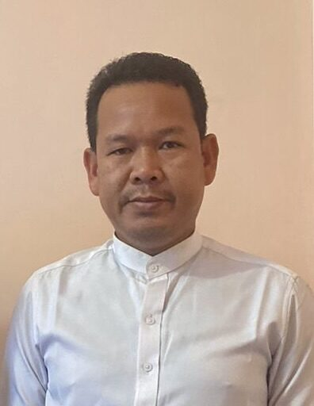
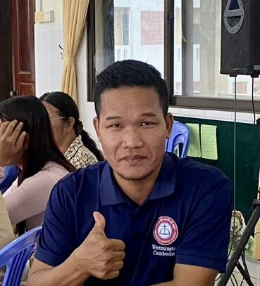
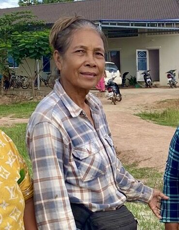
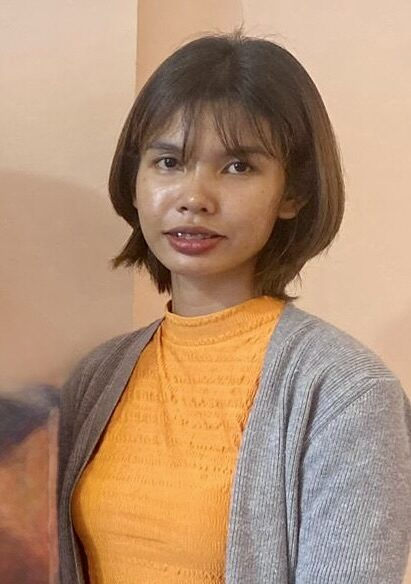
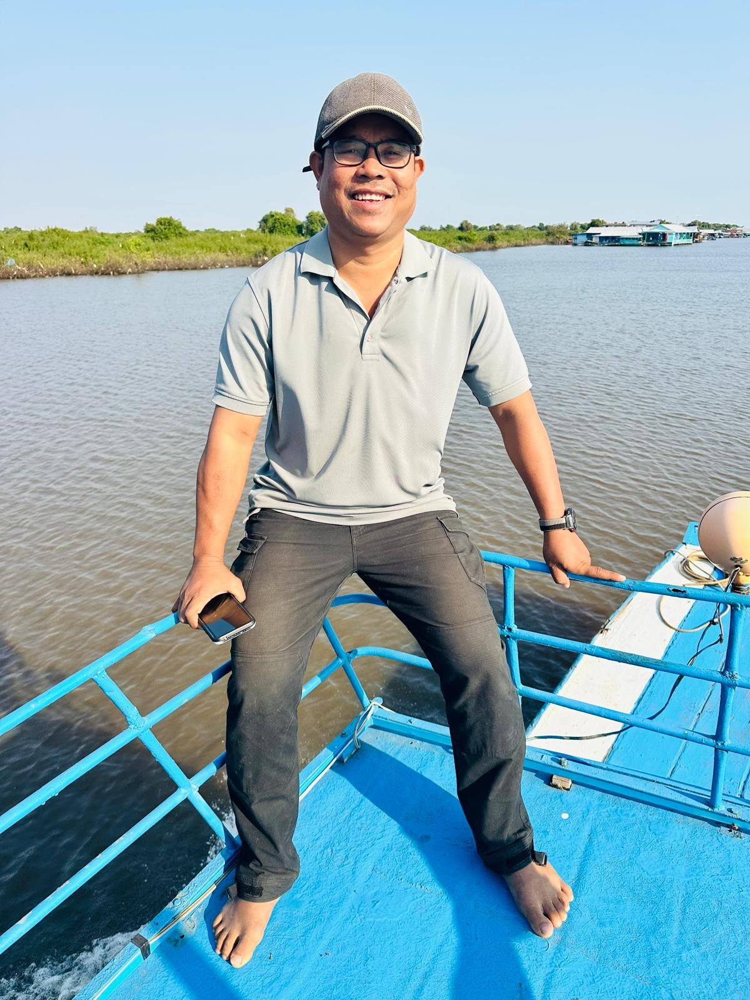
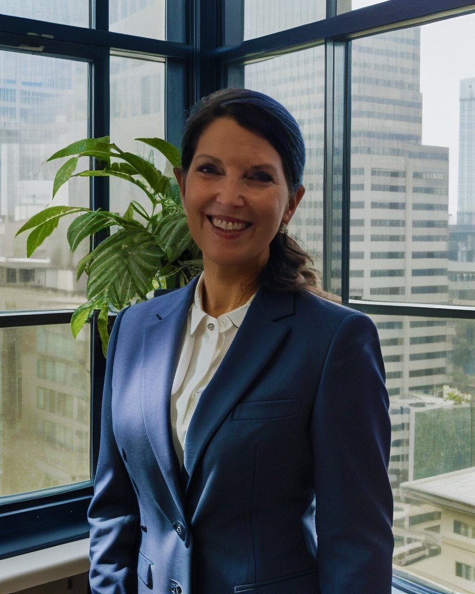
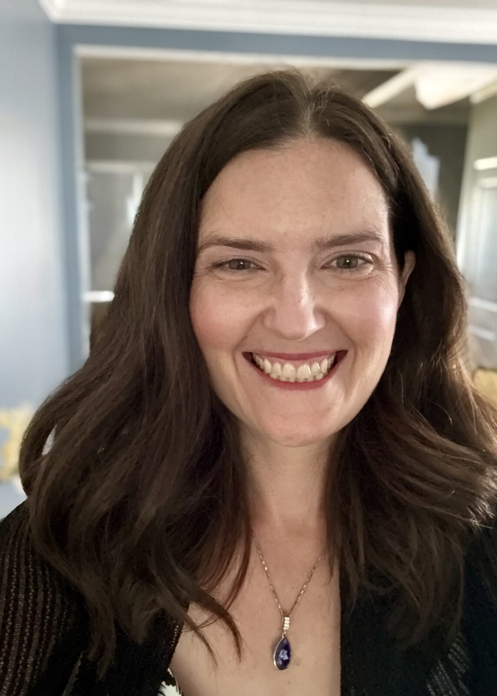
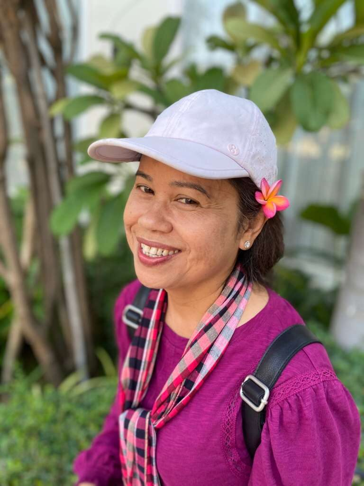

Seng Sophanna
Head Pastor
Overall local leader of Light of Cambodia's ministry on the ground in Pursat, reporting directly to the board.
ក្រុមរបស់យើងOur Team
Light of Cambodia's work is carried out through local leadership in Pursat, alongside a small US-based board handling governance, finances, and support. Christ is already at work in the heart of the Cambodian people, and we are grateful to walk alongside them — serving children, families, and communities as an act of worship to Christ himself, just as He calls us to in Matthew 25:31-46.

Seng Sophanna
Head Pastor
Overall local leader of Light of Cambodia's ministry on the ground in Pursat, reporting directly to the board.

Sok Chea
Youth Ministry
Leads the music program and teen ministry.

Mom Chanthoeun
Community Liaison
Runs the feeding program and coordinates community support.

Keo Sreylin
Preschool Ministry
Helps run the preschool ministry.

Chan Sreylin & Chan Savin
Battambang Branch
Teacher and pastor, respectively, leading Light of Cambodia's new branch in Battambang.

Yong La
Administrator & Support
Works part-time as an administrator, provides general support, and leads English classes.

Kim Hooie
President

Jennifer Johnson
Secretary & Treasurer

Sydney Meth
Vice President
Support keeps local leaders present in their own communities, week after week.